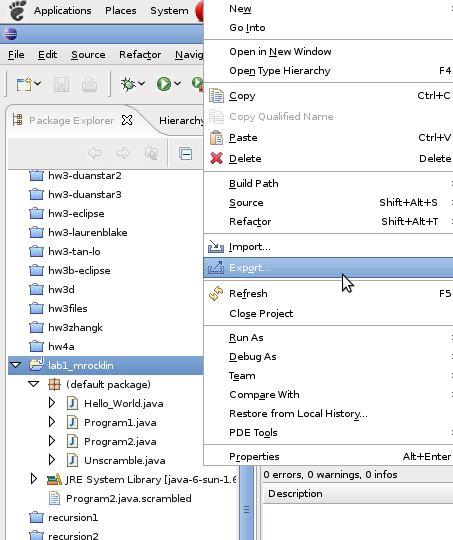
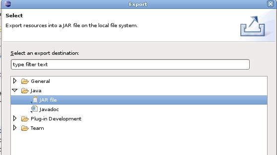
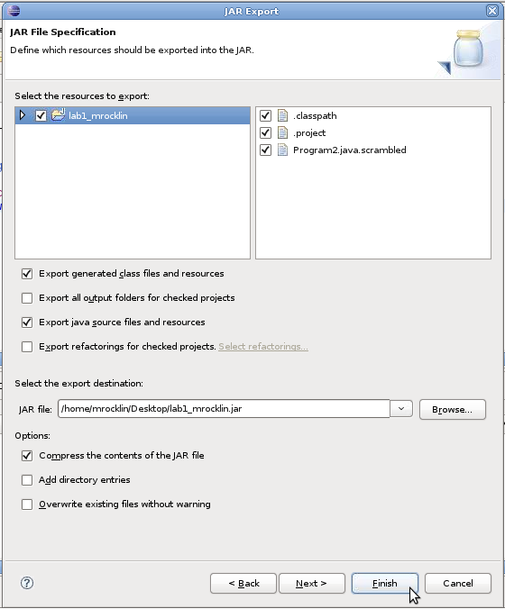

You will submit your lab and homework projects through Chalk. The assignments in this class will often be complex (several .java files, some data, a textfile, etc...) and with complexity often comes confusion. The instructions here are intended to minimize course confusion, missing assignments, incorrect grades, etc....
It is important for grading purposes that submissions be relatively standardized. This makes life on the grader easier and ensures that your assignment will not fail our automated tests. Each homework or lab assignment will list the files that we expect to receive. When submitting work done in Java please submit a .jar file (instructions below). When submitting written (not-code) work please submit a standard textfile. Fancier formats such as
.doc and .pdf are not accepted.
While we will keep diligent records of all assignments it is important to remember that accidents do happen. Please keep copies of your work on your local computer in case something goes wrong.
Because uploading several .java files can be cumbersome we will package all of the files associated to a project into a single Java Archive or .jar file. This is like a zip file but Java specific.
Right click on your project and select "Export" . In these examples we'll assume it's the first lab but this process works generally.
Select Java, JAR File. Click Next.
Check the "Export Java Source Files" Checkbox - This is very important as this includes all of your source code (.java files) and it is not checked by default. If you do not check this box you will not receive a grade.
Select a destination for the Jar file that you'll be able to find easily. Select a destination on the desktop if you're unfamiliar with Linux. You can select this destination by clicking on the "Browse" button.
 Now that we have a .jar file let's submit it to chalk for grading. To use the web on the CS Machines I suggest using either Opera or Iceweasel. You can find them in the Applications menu in the upper left under Internet.
Log into Chalk and select the CMSC-10200 course in the lower right.
Select Labs and Lectures from the left sidebar.
Upload your .jar file under the appropriate folder.
This section is for those who prefer the command-line rather than using Eclipse. This probably doesn't apply to you so you should probably skip this section.
The commands to create a Java Archive .jar file are as follows. The internet is full of reading on this - most of this material came from the JavaWorkshop book on sourceforge. Examples below have both a generic part and a part specific to lab1 for clarity.
To create a jar archive
jar cvf jar-filename input-files or jar cvf lab1_username.jar lab1_username/
To view files within a jar archive
jar tf jar-filename or jar tf lab1_username.jar
To extract files from a jar archive
jar xf jar-filename files_to_extract or jar xf lab1_username.jar Program1.java Program1.java or jar xf lab1_username.jar #leave second argument blank to extract all files